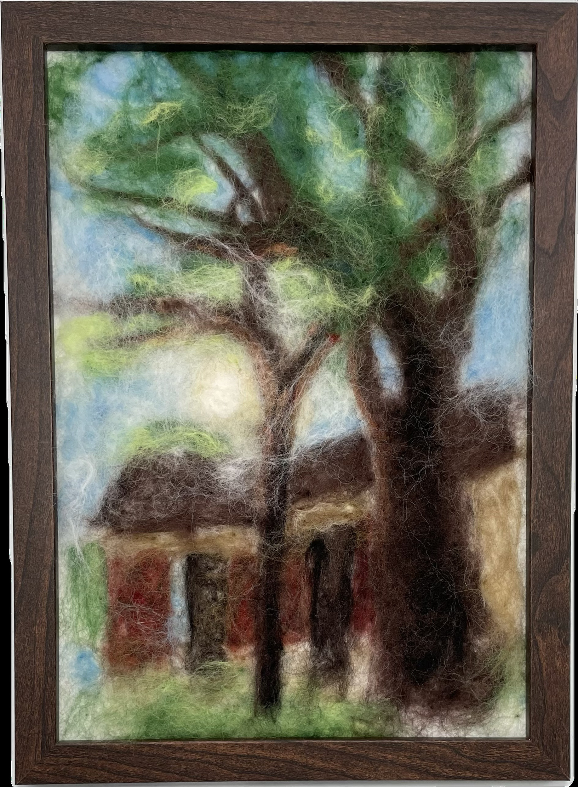

作品名稱：柔焦濾鏡
作者姓名：徐杏鈞
作品主題：紅樓與樹與太陽
作品敘述：這是我每天從宿舍要往班上走時會看到的畫面，不過模糊了好幾倍。我試著利用羊毛氈畫可以覆蓋多層的特性把陽光灑落的效果做出來，在紅樓與樹葉上覆蓋白色羊毛，暗示前後關係，還有把深綠色的樹葉換成淺色，表示半透光的質感。
This is the view I see every day when walking from my dorm to class, but blurrier. I tried to use the layered nature of wool felt to create the effect of sunlight filtering through. I added white wool over the red building and leaves to suggest depth and perspective, and I replaced the dark green leaves with lighter shades to convey a semi-transparent, sunlit texture.